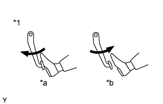
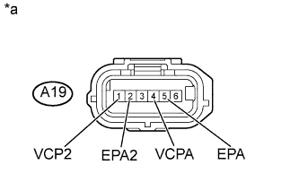

DTC P2120 Цепь датчика положения педали/дроссельной заслонки "D" |
DTC P2122 Низкий уровень сигнала на входе цепи датчика положения педали/дроссельной заслонки "D" |
DTC P2123 Высокий уровень сигнала на входе цепи датчика положения педали/дроссельной заслонки "D" |
DTC P2125 Цепь датчика положения педали/дроссельной заслонки "E" |
DTC P2127 Низкий уровень сигнала на входе цепи датчика положения педали/дроссельной заслонки "E" |
DTC P2128 Высокий уровень сигнала на входе цепи датчика положения педали/дроссельной заслонки "E" |
DTC P2138 Корреляция напряжений датчиков положения педали/дроссельной заслонки "D"/"E" |
| Режим поездки при обнаружении DTC | Условие обнаружения DTC | Неисправный участок |
Зажигание включено (IG)
| Условие (a) выполняется в течение 0,5 с (логика диагностирования за 1 поездку): (a) Напряжение на контакте VPA ниже 0,4 В, а показание на контакте VPA2 превышает 2,7 град., или напряжение на контакте VPA выше 4,8 В. |
|
| Режим поездки при обнаружении DTC | Условие обнаружения DTC | Неисправный участок |
Зажигание включено (IG)
| Условия (a) и (b) сохраняются в течение 0,5 секунд (логика диагностирования за 1 поездку): (a) Напряжение на контакте VPA ниже 0,4 В. (b) Значение на выходе VPA2 превышает 2,7 град. |
|
| Режим поездки при обнаружении DTC | Условие обнаружения DTC | Неисправный участок |
Зажигание включено (IG)
| Условие (a) выполняется в течение 2,0 с (логика диагностирования за 1 поездку): (a) Напряжение на контакте VPA превышает 4,8 В. |
|
| Режим поездки при обнаружении DTC | Условие обнаружения DTC | Неисправный участок |
Зажигание включено (IG)
| Условие (a) выполняется в течение 0,5 с (логика диагностирования за 1 поездку): (a) Напряжение на контакте VPA2 ниже 1,2 В, а показание на контакте VPA превышает 2,7 град., либо напряжение на контакте VPA2 выше 4,8 В, а показание на контакте VPA выше 0,4 В, но ниже 3,45 В. |
|
| Режим поездки при обнаружении DTC | Условие обнаружения DTC | Неисправный участок |
Зажигание включено (IG)
| Условия (a) и (b) сохраняются в течение 0,5 секунд (логика диагностирования за 1 поездку): (a) Напряжение на контакте VPA2 ниже 1,2 В. (b) Значение на выходе VPA1 превышает 2,7 град. |
|
| Режим поездки при обнаружении DTC | Условие обнаружения DTC | Неисправный участок |
Зажигание включено (IG)
| Условия (a) и (b) сохраняются в течение 2,0 секунд (логика диагностирования за 1 поездку): (a) Напряжение на контакте VРA2 превышает 4,8 В. (b) Напряжение на контакте VPA превышает 0,4 В, но составляет менее 3,45 В. |
|
| Режим поездки при обнаружении DTC | Условие обнаружения DTC | Неисправный участок |
Зажигание включено (IG)
| Условие (a) или (b) сохраняется в течение 2,0 с (логика диагностирования за 1 поездку): (a) Разница между значениями напряжения на контактах VPA и VPA2 составляет менее 0,02 В. (b) Напряжение на контакте VPA ниже 0,4 В, а напряжение на контакте VPA2 ниже 1,2 В. |
|
| № DTC | Параметры из Data List |
| P2120 |
|
| P2122 | |
| P2123 | |
| P2125 | |
| P2127 | |
| P2128 | |
| P2138 |
| 1.СНИМИТЕ ПОКАЗАНИЯ ПОРТАТИВНОГО ДИАГНОСТИЧЕСКОГО ПРИБОРА (ПОЛОЖЕНИЕ ПЕДАЛИ АКСЕЛЕРАТОРА) |
|  |
Подсоедините портативный диагностический прибор к DLC3.
Включите зажигание (IG) и портативный диагностический прибор.
Войдите в следующие меню: Powertrain / Engine and ECT / Data List / Accel Sens. No.1 Volt % и Accel Sens. No.2 Volt %.
Считайте значения.
| Педаль акселератора | Accel Sens. No.1 Volt % | Accel Sens. No.2 Volt % |
| Отпущена | 8 - 28% | 51 - 86% |
| Нажата | 30 - 55% | 73 - 98% |
| *1 | Педаль акселератора в сборе |
| *a | Нажата |
| *b | Отпущена |
| Результат | Следующий шаг |
| NG | А |
| OK | B |
|
| ||||
| А | |
| 2.ПРОВЕРЬТЕ ЖГУТ ПРОВОДОВ И РАЗЪЕМ (ДАТЧИК ПОЛОЖЕНИЯ ПЕДАЛИ АКСЕЛЕРАТОРА – ECM) |
Отсоедините разъем датчика положения педали акселератора.
Отсоедините разъем ECM.
Измерьте сопротивление в соответствии со значениями, приведенными в таблице ниже.
| Контакты для подключения диагностического прибора | Условие | Заданные условия |
| A19-1 (VCP2) - G58-4 (VCP2) | Всегда | Менее 1 Ом |
| A19-2 (EPA2) - G58-3 (EPA2) | Всегда | Менее 1 Ом |
| A19-3 (VPA2) - G57-1 (VPA2) | Всегда | Менее 1 Ом |
| A19-4 (VCPA) - G58-6 (VCPA) | Всегда | Менее 1 Ом |
| A19-5 (EPA) - G58-5 (EPA) | Всегда | Менее 1 Ом |
| A19-6 (VPA) - G57-2 (VPA) | Всегда | Менее 1 Ом |
| Контакты для подключения диагностического прибора | Условие | Заданные условия |
| A19-1 (VCP2) или G58-4 (VCP2) - масса | Всегда | 10 кОм или более |
| A19-2 (EPA2) или G58-3 (EPA2) - масса | Всегда | 10 кОм или более |
| A19-3 (VPA2) или G57-1 (VPA2) - масса | Всегда | 10 кОм или более |
| A19-4 (VCPA) или G58-6 (VCPA) - масса | Всегда | 10 кОм или более |
| A19-5 (EPA) или G58-5 (EPA) - масса | Всегда | 10 кОм или более |
| A19-6 (VPA) или G57-2 (VPA) - масса | Всегда | 10 кОм или более |
Подсоедините разъем датчика положения педали акселератора.
Подсоедините разъем ECM.
|
| ||||
| OK | |
| 3.ПРОВЕРЬТЕ НАПРЯЖЕНИЕ НА КОНТАКТАХ ECM (КОНТАКТЫ VCPA И VCP2) |
|  |
Отсоедините разъем датчика положения педали акселератора.
Измерьте напряжение в соответствии со значениями, приведенными в таблице.
| Контакты для подключения диагностического прибора | Положение переключателя | Заданные условия |
| A19-4 (VCPA) - A19-5 (EPA) | Зажигание включено (IG) | 4,5-5,5 В |
| A19-1 (VCP2) - A19-2 (EPA2) | Зажигание включено (IG) | 4,5-5,5 В |
| *a | Вид спереди разъема со стороны жгута проводов: (к датчику положения педали акселератора) |
Подсоедините разъем датчика положения педали акселератора.
|
| ||||
| OK | |
| 4.ЗАМЕНИТЕ ТЯГУ ПЕДАЛИ АКСЕЛЕРАТОРА В СБОРЕ |
Замените тягу педали акселератора в сборе (Нажмите здесь).
|
| ||||
| 5.ЗАМЕНИТЕ ECM |
Замените ECM (Нажмите здесь).
|
| ||||
| 6.ОТРЕМОНТИРУЙТЕ ИЛИ ЗАМЕНИТЕ ЖГУТ ПРОВОДОВ ИЛИ РАЗЪЕМ |
Отремонтируйте или замените жгут проводов или разъем.
| ДАЛЕЕ | |
| 7.ПРОВЕРЬТЕ, УСТРАНЕНА ЛИ ДОЛЖНЫМ ОБРАЗОМ НЕИСПРАВНОСТЬ |
Подсоедините портативный диагностический прибор к DLC3.
Сбросьте коды DTC (Нажмите здесь).
Выключите зажигание и оставьте автомобиль "как есть" на 30 с.
Включите зажигание (IG).
Полностью отпустите педаль акселератора на 3 с или более, частично нажмите ее и удерживайте в течение не менее 3 с, а затем полностью нажмите ее на 3 с или более.
Убедитесь, что DTC не выводится снова.
| ДАЛЕЕ | ||
| ||